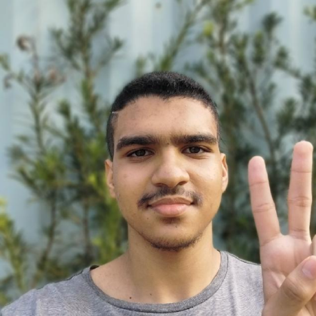

Wesley Queiroz
Engenharia de Software - Uninter

Tenho 18 anos e curso Engenharia de Software na Uninter.
Atualmente, tenho mais experiência em desenvolvimento front-end e venho me aprofundando em automações com inteligência artificial, com o objetivo de me tornar desenvolvedor back-end. Desde criança, sou apaixonado por tecnologia, o que me motivou a ingressar na área de TI e a estudar constantemente diferentes assuntos relacionados.